Green Revolution in Electronics Engineering and Networks Conference (GREENCON) 2025
19th - 21st March, 2025
An international conference Organized by
School of Electronics Engineering
Vellore Institute of Technology, Chennai

KEYNOTE SPEAKER
| Photo | Name | Credentials | Symposium | About |
|---|---|---|---|---|
| 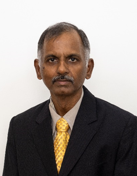 | Dr. A Alphones | Professor, Nanyang Technological University | KEYNOTE SPEAKER |
| Photo | Name | Credentials | Symposium | About |
|---|---|---|---|---|
| 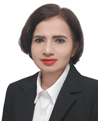 | Dr Malka N. Halgamuge | RMIT University, Melbourne, Australia | Intelligent Wireless Communication Networks | |
| 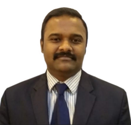 | Dr. Saravana Balaji B | Department of Computing, De Montfort University Kazakhstan, Almaty, Kazakhstan | Intelligent Wireless Communication Networks | |
| 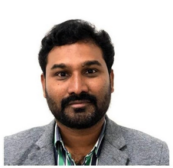 | Dr. Gunasekaran Thangavel | Deputy Program Director, University of Technology and Applied Sciences, Muscat, Oman | Data Driven Innovations in Electronics Engineering | |
| 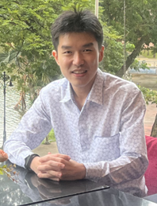 | Dr. Lee Yong Hong | Assistant Professor, Universiti Tunku Abdul Rahman (UTAR) | Microwave and Antenna Green Networks and Emerging Technologies |
| Photo | Name | Credentials | Symposium | About |
|---|---|---|---|---|
| 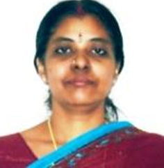 | Dr. M. Meenakshi | Professor & Director, Centre for Wireless System Design, ECE Engineering, CEG, Anna University | Green Innovations in Photonics and Optical Communication | |
| 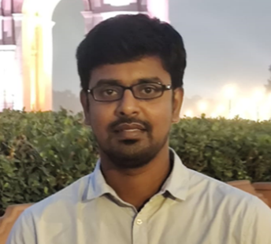 | Dr. Sreenath Reddy Thummaluru | Assistant Professor, IIITDM Kancheepuram, Chennai, India | Microwave and Antenna Green Networks and Emerging Technologies | |
| 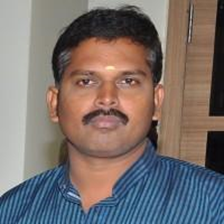 | Dr. S. Sakthivel Murugan | Professor, ECE Engineering, NITTTR, Chennai | Signal and Image Processing for Sustainable Development | |
| 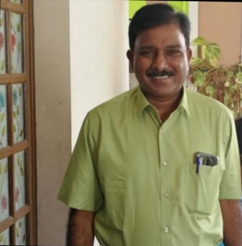 | Dr. Pethuru Raj | Reliance Jio Platforms Ltd, Bangalore, India | Sustainable Intelligent Systems | |
| 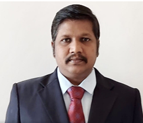 | Dr. M. D. Selvaraj | Professor, IIITDM, Tamilnadu, India | Sustainable Intelligent Systems | |
| 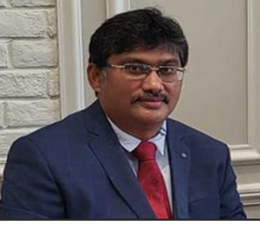 | Srinivasan Narayanan | Sr. Director, Oracle India Pvt Ltd, Kadubeesanahalli, Bengaluru, Karnataka | Data Driven Innovations in Electronics Engineering | |
| 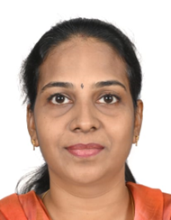 | Ms Suganya Annadurai | Senior Scientist, SETS, Thanjavur, India | Sustainable Innovations in VLSI Devices, Circuits and Systems | |
| 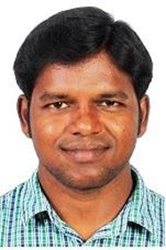 | Dr. Prabu K | Associate Professor, ECE Engineering, NIT Suratkal, India | Green Innovations in Photonics and Optical Communication |
Dr. A Alphones
Professor,
Nanyang Technological University
Singapore
About Speaker
A Alphones received his B.Tech. from Madras Institute of Technology in 1982, M.Tech. from Indian Institute of Technology Kharagpur in 1984 and Ph.D. degree in Optically Controlled Millimeter wave Circuits from Kyoto Institute of Technology (Japan) in 1992. He was a JSPS visiting fellow from 1996-97 at Japan. During 1997-2001, he was with Centre for Wireless Communications, National University of Singapore involved in the teaching and research on optically controlled passive/active devices. Since 2001 he is Professor with the School of Electrical and Electronic Engineering, Nanyang Technological University, Singapore. He has 35 years of research experience. He has published and presented over 350 technical papers in peer reviewed International Journals/ Conferences. His current interests are electro-magnetic analysis on planar RF circuits and integrated optics, microwave photonics, visible light communication and positioning, metamaterial based leaky wave antennas, THz transceiver for 6G Systems and wireless power transfer technologies. He was involved many IEEE flagship conferences held in Singapore and General Chair of APMC 2009, MWP 2011, TENCON 2016, APMC 2019 and TENCON 2024. He was the chairman of IEEE Singapore section during 2015-2016, 2018, 2023 and a senior member of IEEE. He is Singapore representative of IEICE(Japan). He is also the panel member of IEEE Conference Application Review Committee. He is also R10 coordinator for IEEE MTT-S MGA member.
Dr. M. D. Selvaraj
Professor, IIITDM, Kanchipuram
Tamilnadu, India
About Speaker
Dr.M.D.Selvaraj obtained B.Tech. and an M.Tech. in ECE from Pondicherry Engineering College (now-named as Puducherry Technological University ) and Ph.D. from IIT Delhi. He began working as a faculty member at the Indian Institute of Information Technology, Design and Manufacturing (IIITDM) Kancheepuram in 2012 where he is now a Professor in Electronics and Communication Engineering and also presently serves as Dean (Design, Innovation, Incubation). Previously, he had held the roles of Dean (Sponsored Research, Industry Consultancy, and Continuing Education) and Head of the ECE department. He is a member of the Selection Committee for faculty and non-teaching selections in CFTI and other reputed private universities. From DST and other agencies, he has received funded projects totaling more than one crore. Also, he is an evaluator for DST project proposals.Prof.Selvaraj currently serves as the editor of IETE Journal of Research. He was an Associate Editor in the Elsevier Computer and Electrical Engineering Journal during 2018-2021. He is the Founder Branch Counselor of the IEEE Student Chapter at IIITDM Kancheepuram. He has been a TPC member of the National Conference on Communications (NCC) and the SPCOM for the past ten years. He served as a Board of Studies (BoS) member for numerous institutions in Tamil Nadu. He is a Senior Member of IEEE. He shares his expertise by presenting several invited speeches at reputed seminars and conferences.
Dr. Pethuru Raj
Reliance Jio Platforms Ltd
Bangalore, India
About Speaker
Dr. Pethuru Raj is currently working as a chief architect at Reliance Jio Platforms Ltd. (JPL) Bangalore. Previously he worked in IBM Global Cloud Center of Excellence (CoE), Wipro consulting services (WCS), and Robert Bosch Corporate Research (CR). In total, he has more than 23 years of IT industry experience and 8 years of research experience. He had finished the CSIR-sponsored PhD degree at Anna University, Chennai and continued with the UGC-sponsored postdoctoral research in the Department of Computer Science and Automation, Indian Institute of Science (IISc), Bangalore. Through international research fellowships (JSPS and JST), he worked as a research scientist for 3.5 years in two leading Japanese universities. His research area includes Internet of Things (IoT), Artificial Intelligence (AI), Model Optimization Techniques, Streaming Analytics, Blockchain, Digital Twins, Cloud-native and Edge computing, Reliability, Prompt and Platform engineering, Quantum Computing, Efficient & Explainable AI, Green & Generative AI, 5G/6G, etc.
Ms Suganya Annadurai
Senior Scientist
SETS, Thanjavur, India
About Speaker
Ms Suganya Annadurai is working as Senior Scientist at SETS and obtained her MTech in VLSI Design from SASTRA University, Thanjavur. In her 20 years of experience at SETS she has developed core competency in secure and efficient realisation of cryptography modules. Her research interests include side channel analysis attacks and countermeasures, analysis and design of efficient and secure crypto modules for communication systems, ubiquitous devices, and embedded devices. She played a major role in the establishment of Side channel analysis evaluation laboratory and hardware testing facility at SETS for the evaluation of cryptography hardware. She has good number of publications in reputed international conferences to her credit.
Dr. S. Sakthivel Murugan
Professor
Electronics and Communication Engineering
NITTTR, Chennai
Google Scholar Citation: scholar.google.com/citations/SakthivelMurugan
Research Gate: www.researchgate.net/SakthivelMuruganS
LinkedIn:
www.linkedin.com/sakthivel-muruganAbout Speaker
Dr. S. Sakthivel Murugan, is working as Professor in the Department of Electronics and Communication Engineering in National Institute of Technical Teachers Training and Research (NITTTR), Chennai from September 2024. Prior to joining NITTTR, he served as Associate Professor in Sri Sivasubramaniya Nadar (SSN) College of Engineering in various designations for 23 plus years since 2001. He obtained his B.E degree from Madras University, M.Tech from Pondicherry University and PhD from Anna University in 2015. His research area of interest is in analog and digital communication systems, satellite, radar and mobile communication, signal processing, image processing, underwater technology related to acoustic signal processing, optical / acoustic image processing, acoustic communication, acoustic wireless sensor networks, underwater energy harvesting, autonomous underwater vehicles and remotely operated vehicles etc. He has an ongoing and various completed external funded projects as PI and Co-PI funded by MoES, DST-SSTP, TNSCST, NIOT and SSN Trust worth more than 165 lakhs. He had established an exclusive research lab for underwater research namely “Underwater Acoustic Research Lab” in SSN by 2015. To his credit, he has authored and co-authored 52+ research articles in leading International and national Journals. He has also presented and published research papers in 80+ proceedings of International and National conferences and has served as keynote speaker for various national and international conferences organized and held in India and abroad (Singapore, Canada, Australia etc). Dr. S. Sakthivel Murugan authored five books titled Principles of Analog and Digital Communication, Analog and Digital Communication, Principles of Communication, Communication Engineering and Communication Theory and had reviewed 4 international edition books including Communication systems by Simon Haykin.
Dr. Lee Yong Hong
Universiti Tunku Abdul Rahman (UTAR)
Research Gate: https://www2.utar.edu.my/staffListDetailV2.jsp?searchId=20019
About Speaker
Dr. Lee Yong Hong received a First-Class B.Sc. (Hons) in Physics in 2012, followed by an M.Eng.Sc. in 2016 and a Ph.D. in Engineering in 2019, all from Universiti Tunku Abdul Rahman (UTAR). After joining UTAR as an Assistant Professor, Dr. Lee continued his research in RFID antenna design for a wide range of applications, earning recognition through publications in esteemed journals such as IEEE Transactions on Antennas and Propagation, as well as leading conference proceedings. A notable achievement was the development of an embedded tag antenna, which, despite its compact size (5 × 3 × 2 mm³), achieved a high realized gain of approximately −5 dBi when fully embedded in metal. To the best of his knowledge, this represented the highest gain-to-size ratio among similar tag antennas at the time, a breakthrough that was recognized with an international patent granted in Taiwan in February 2022.
Dr. Sreenath Reddy Thummaluru
Assistant Professor
IIITDM Kancheepuram, Chennai, India
Research Gate: https://www.iiitdm.ac.in/people/faculty/sreenath@iiitdm.ac.in
About Speaker
Sreenath Reddy received the master’s and Ph.D. degrees in RF & Microwave engineering from Indian Institute of Technology Dhanbad, India, in 2016 and 2021, respectively. He received the Raman-Charpak fellowship 2019-20 and carried ompleted part of his Ph.D. work at Sorbonne University, Paris, France, for six months. He worked as an IOE-IISc postdoctoral fellow at the Department of ECE, IISc Bangalore, from Nov. 2021 to Feb. 2022. Currently, he is working as an Assistant Professor at the Department of ECE, IIITDM Kancheepuram. Dr. Sreenath received the URSI Young Scientist Award two times in GASS 2021 at Rome Italy and AT-RASC 2024 at Gran Canaria, Spain. He is currently executing research projects worth more than 1 crore and funded by DST, DRDO, and IIITDM.
Dr Malka N. Halgamuge
RMIT University
Melbourne, Australia
Google Scholar: Scholar Profile
LinkedIn: LinkedIn Profile
About Speaker
Dr Malka N. Halgamuge is a Senior Lecturer in Cybersecurity at RMIT University, Melbourne, Australia. She is the Chair of the IEEE Computational Intelligence Society, Victorian Section. From 2007-2021, Malka worked as a Researcher at the Department of Electrical and Electronic Engineering at the University of Melbourne. She obtained her PhD in the same department. She was awarded prestigious fellowships to work at the University of California, Los Angeles, Lund University, Sweden, and the Chinese Academy of Sciences (CAS), Beijing, among others. Malka was the Keynote Speaker, Plenary Speaker, Associate Editor, Editorial Board Member, and IEEE Senior Member. She was the Program Co-Chair, Track Chair, Publication Chair, Advisory Chair, Publicity Co-Chair, Session Chair, Guest Editor, and a Member of the TPC for 300 international conferences. She has presented 60 invited/guest lectures in academia (e.g., Oxford University, Ohio State University), industry (e.g., IBM, KPMG East Africa, AISA), and at 10 IEEE sections. Malka has conducted 18 media interviews, articles, radio interviews, and TV interviews (ABC News). She is passionate about research in IoTs, Data Communications, Cyber Security, Blockchain, Machine & Deep Learning, and security in Large Language Models. She has co-supervised 4 PhD students to completion at the University of Melbourne and currently supervises 6 PhD students at RMIT University as the principal supervisor. Malka has been a chief investigator for multiple grants totalling over $1 million and has over 100 peer-reviewed publications in scientific journals and conference proceedings. She has been consecutively listed among the top 2% of the world’s most cited researchers (Stanford University database, 2020-2024).
Dr. Saravana Balaji B
Department of Computing
De Montfort University Kazakhstan
Almaty, Kazakhstan
About Speaker
He is currently affiliated with Department of Computing, De Montfort University Kazakhstan, Almaty, Kazakhstan. He is having 18 years of teaching and research experience. His research interests are machine learning, cloud computing and optimization techniques. He have been acted as a resource person for various workshops and faculty development programs organized by various institutions. He completed his undergraduate and postgraduate engineering degree in Computer Science and Engineering. He has earned his Ph.D. degree from Anna University Chennai under the faculty of Information and Communication Engineering. So far he has published more than 40 research articles in various indexed international journals and conferences.
Dr. Prabu K
Associate Professor
Dept. of Electronics & Communication Engineering
NIT Suratkal
About Speaker
Dr. Prabu K is an Associate Professor in the Department of Electrical and Computer Engineering at the National Institute of Technology Karnataka (NIT-K) in Surathkal. Prior to this, he was an Associate Professor at VIT University Vellore's SENSE, as well as at EEC, SRM Group, LICET, the Loyola group of institutions, and SGC Services Pvt. Ltd. in the CIPA Project NIC Puducherry. Over all he has 11+ years of experience with the wireless and optical communications domain. He is a notable alumnus of Anna University, where he graduated and post graduated in 2007 and 2010, respectively, before pursuing a PhD at NIT Trichy. He is a Senior Member of the IEEE. Prof. Prabu has mentored around 40 PhD and Master's students, significantly contributing to academic and professional growth. He has disseminated valuable knowledge through one patent, three funded projects totaling INR 2.2 Crores, and authored 81 technical papers, including 70 in prestigious international journals and 16 at international conferences. His contributions extend to two book chapters and one book publication. Prof. Prabu has delivered over 150 invited and conference talks at renowned institutions such as IISc Bangalore, IIT Indore, and IIT Goa, and led five training programs that have benefitted thousands of teachers, students, and working professionals. Recognized for his academic prowess, Dr. Prabu has received fellowships from the Government of India, including the University Grant Commission (UGC) and the Technical Education Quality Improvement Programme (TEQIP). He has also been honored with the TEQIP International Foreign Travel Grant for his laboratory visits to Nanyang Technological University (NTU), Singapore. He visited the Asia Pacific University of Technology & Innovation (APU) in Malaysia to present his research paper at the IEEE 21st Student Conference on Research and Development (SCOReD). Notably, Dr. Prabu's contributions have earned him a place among the top 2% of scientists worldwide, as acknowledged by Elsevier and Stanford University US consecutively in the years 2019, 2020, 2021, and 2022. In 2020, his world rank stood at 398 in the field of optoelectronics and telecommunication. His research interests include Wireless Optical Communication (FSO, VLC, and Underwater), Optical Sensors, Nano-Photonics, 5G, Antennas and 6G–IoT.
Dr. M. Meenakshi
Professor & Director, Centre for Wireless System Design
Dept. of Electronics & Communication Engineering
CEG, Anna University
About Speaker
Meenakshi Murugappan is a professor in the Department of Electronics and Communication Engineering, College of Engineering Guindy, Anna University, Chennai, India. She has completed B.E.(hons) Electronics and Communication Engineering in Madurai Kamaraj University, M.E. Applied Electronics in College of Engineering Guindy, Ph.D in Communications in College of Engineering Guindy, Anna University, Chennai. She is a member of IEEE, ISTE, and OSI. She has published 40 national/international journal papers also more than 60 national/international conference papers in the field of optical and wireless communication and networks. Her present research interests include green cellular communication, radio over fiber networks, UWB and Wireless BAN.
Dr. Gunasekaran Thangavel
Deputy Program Director
University of Technology and Applied Sciences
Muscat, Oman
About Speaker
Dr. Gunasekaran Thangavel is a Senior Lecturer and Deputy Program Director specializing in Electronics and Communication Engineering (ECE) at the University of Technology and Applied Sciences in Muscat, Oman. With a Ph.D. in Information and Communication Engineering from Anna University, Chennai, he brings 24 years of teaching experience and over 15 years in research. His expertise spans wireless communications, antenna design, and bio-electromagnetics, with a publication record of 49 papers, including international journals,conferences, and book chapters. Dr. Thangavel has guided over 75 undergraduate and postgraduate projects and secured multiple research grants. He has also filed five patents, focusing on machine learning and IoT applications. Recognized for his contributions, he has received the Role Model Employee award twice at UTAS and leads initiatives in curriculum development and program design. His professional memberships include IEEE, ISTE, and IAENG, and he frequently reviews for top engineering journals.
Srinivasan Narayanan
Sr. Director
Oracle India Pvt Ltd
Kadubeesanahalli, Bengaluru, Karnataka
About Speaker
Srinivasan Narayanan Graduated in Computer Science in Engineering from Anna University in 2001.He is With Oracle over 2 decades, specializing in the turnaround and setup of businesses across geographies, He currently into Delivery and transformation of Oracle Consulting, responsible for the sales and delivery of Consulting services and solutions across Oracle Applications and Technology.Passionate about solving business problems for our customers to deliver the Customer for Life mantra, He drive san inclusive culture of innovation and excellence, ensuring execution of adaptive strategies to realize our vision through enduring partnerships to collaboratively create success for customers to be our advocates. He has been instrumental in driving transformation for several marquee organizations across North America, South America, EMEA and APAC, helping them realize value through business led technology innovation and transformation. Successful in multiple leadership positions with Oracle over 20 years, He is leading Oracle’s Cloud portfolio over the past 10 years from inception, guiding customers across FSI, Public Sector, Health, Retail, Manufacturing and Higher Ed Globally to transform their business with Oracle Cloud. His prime drivers for the team are to : 1. Solve Business problems for our customers and make them Advocates for Oracle, thereby 2. Growing Oracle ERP- Fusion , E-Business Suite , JD Edwards ,OTM.